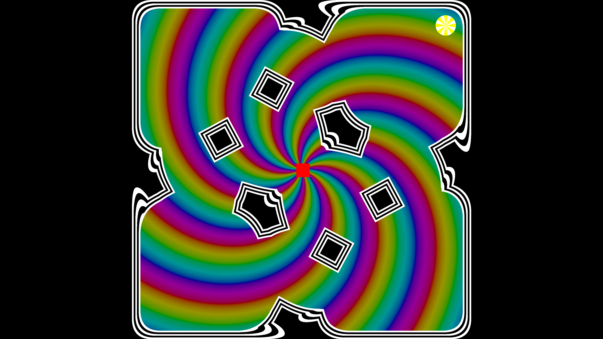

The World's Hardest Trip
Concept
The World's Hardest Trip is a solo project I created for the 2024 Pumpkin Jam. It is inspired by the classic Flash game titled The World's hardest game, featuring a similar set of challenges and control system. This game is made unique by is interesting visuals and unique design approach.
I approached creating this game with the self-adminiserted challenge of using as little assets & scene elements as possible within the Unity game engine. The final project only has 3 assets: a script, a shader, and a scene. The scene itself only has one camera object. All of the games visuals are displayed via a single post-processing shader and all of the level data is within the script's serializable variables.
Unfortunetally, this unique approach to game development resulted in a project that doesn't function as a web build. The project can be downloaded for Windows on My Itch Page.
Screenshot from The World's Hardest Trip
Controls
- WASD/Arrow Keys to move